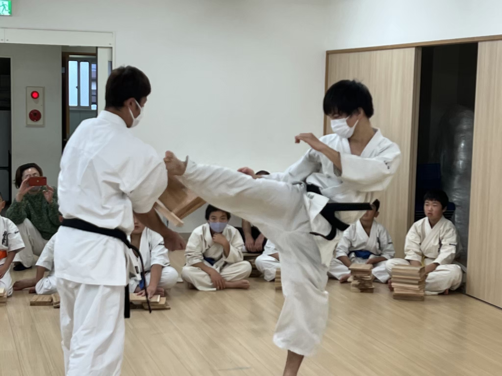
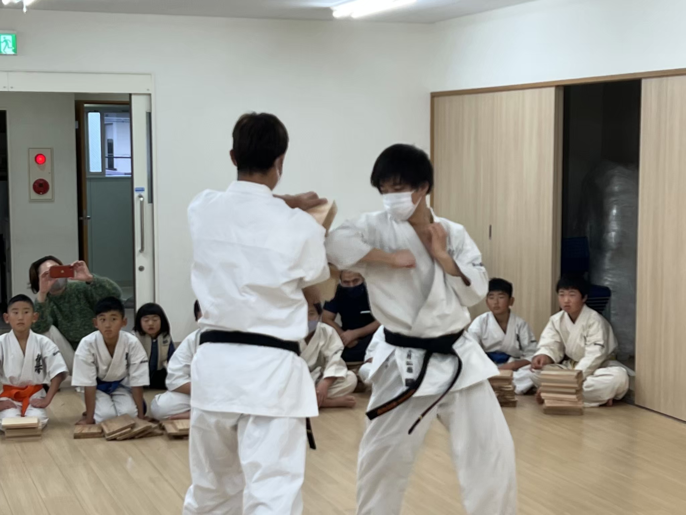

d01tkum
Home
(current)
MyResearch
(current)
Hobbies
Web
Social
Karate
Search
極真空手 - Kyokushin Karate -
I have practiced "Karate" since elementary school.
"Karate" is "Budou", not "Sports".
所属
極真空手 関西総本部 堺支部
茶色帯一本線(1級)
所属道場 »
略歴 «BIOGRAPHY»
小1:
空手道MAC を習い始める in 神奈川
小3ぐらい:
極真空手に移行する in 神奈川
小4:
大阪への転勤を機に今の道場へ移籍
中1:
もうよくね？ となり辞める (オンラインゲームにハマる)
高１:
やっぱ空手いいよね となり再開する
高３:
大学受験なので一旦辞める
大1:
再開する
大3ぐらい:
関西総本部 交流試合 一般 優勝
院1 12月:
大阪冬の陣 一般 準優勝
院2 9月:
昇段試験を受ける予定 (黒帯10人と連続組手)

